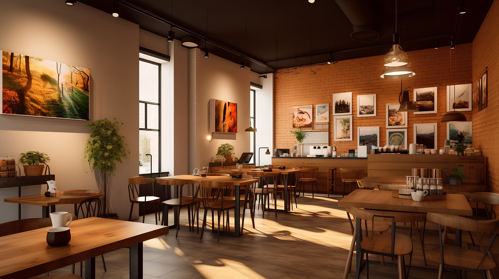

News
- 10月8日～10日は、わかやまコーヒーマーケットがあるため、お店は休業させていただきます。「コーヒーマーケット」でコーヒーの飲み比べ開催しますので、ぜひお越しください。
- 本日も10時～オープン致します。いつも使っているコーヒー豆とは別に新しいルワンダ産の豆を仕入れました。ルワンダのコーヒーは、フルーツの甘い香りやフローラルな香りが特徴的です。バランスが取れてとても飲みやすです。
地元産にこだわったランチと香り高い珈琲で、寛ぎのカフェタイムを
和歌山の大自然の中でゆったりとした時間は、慌ただしい日常が遠い世界のできごとのように感じられます。 時間が経つのも忘れて、ただただ自然を眺めてぼーっと過ごしたひとときの心の充実を、私は、知っています。
そんなゆったりとした時間を過ごせるカフェがあったら……そんな思いでつくったのが、このspring9470cafeです。 古材を活用した味わいのある内装、花や山々に囲まれたテラス。旬の味覚をふんだんに使ったデザートや、地元の野菜にこだわったランチは、どれも手作りです。 コーヒーは注文をいただいてから焙煎し挽きたての香りをお楽しみいただいております。
天気のいい日には、自然を感じられるテラス席もおすすめ。テラス席のみペットの同伴もOKです。 おひとり様もお子様連れの方も、お気に入りのお席で、思い思いの時間をゆったりとお過ごしください。
カフェでの時間をより楽しいものにしていただくべく、美味しい珈琲の淹れ方講座、フラワーアレンジメント講座やヨガ教室、アロマ作りなどのさまざまな体験や さまざまなイベントも開催しております。また、占いなどの開催者も募集しています。 スケジュールは＜News＞で告知いたしますので、ご確認くださいませ。
皆様のお越しを心よりお待ちしております。
spring9470cafe 店主
〇〇〇 〇〇
店舗情報
| 住所 | 〒642-0026 和歌山県海南市別所〇〇〇〇（ 地図 ） |
|---|---|
| 電話番号 | 090-0000-0000 |
| 営業時間 | 11:00～21:00 |
| 定休日 | 月・火・水・木・金 |
| ご予約 | ご予約は、お電話もしくはお問い合わせフォーム より受付しています。ご予約希望日時と人数をお知らせください。 ※フォームからのご予約の返信にはお時間がかかる場合がございますので、ご了承ください。 |
アクセス
海南駅（JR紀勢本線(きのくに線)）から約4.2km
- 海南駅下車 4番ホーム バス停（海南高原カントリー下）乗車
- バス停 願成寺前より徒歩13分